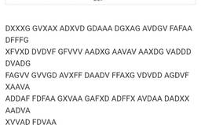
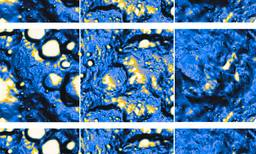
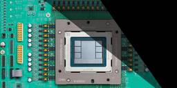
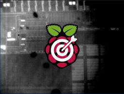

Hacker News: Front Page
フィード

Laya the open source version of Jev
Hacker News: Front Page
Article URL: https://laya.convaiinnovations.com/Comments URL: https://news.ycombinator.com/item?id=49765348Points: 26# Comments: 4
2時間前
AI-generated posters don’t have to be horrible
Hacker News: Front Page
Article URL: https://john.hartnup.uk/2026/06/07/ai-event-posters.htmlComments URL: https://news.ycombinator.com/item?id=49764791Points: 268# Comments: 175
3時間前

GPT-6 Astra Solves a WWI German Radio Cipher
Hacker News: Front Page
Article URL: https://www.prinzai.com/p/gpt-6-astra-solves-a-wwi-german-radioComments URL: https://news.ycombinator.com/item?id=49763987Points: 153# Comments: 82
6時間前
If math is more than proof, we need to better celebrate the rest of it
Hacker News: Front Page
Article URL: https://terrytao.wordpress.com/2026/09/18/if-math-is-more-than-proof-we-need-to-better-celebrate-the-rest-of-it/Comments URL: https://news.ycombinator.com/item?id=49763928Points: 147# Comments: 109
6時間前
Apple M6 Pro Achieves the Highest Single-Core CPU Score in Geekbench 7
Hacker News: Front Page
Article URL: https://browser.geekbench.com/v7/cpu/389219Comments URL: https://news.ycombinator.com/item?id=49763883Points: 88# Comments: 88
6時間前
Human brain is two separate organs, Stanford Medicine-led research finds
Hacker News: Front Page
Article URL: https://med.stanford.edu/news/all-news/2026/09/two-separate-brains.htmlComments URL: https://news.ycombinator.com/item?id=49763697Points: 307# Comments: 116
7時間前

NASA-IBM Lunar Foundation open-Source Geospatial AI Model
Hacker News: Front Page
Article URL: https://newsroom.usra.edu/usra-contributes-planetary-science-expertise-to-nasa-ibm-lunar-foundation-model/Comments URL: https://news.ycombinator.com/item?id=49763379Points: 35# Comments: 4
8時間前
San Francisco Onion Futures Company
Hacker News: Front Page
Article URL: https://onionfutures.com/Comments URL: https://news.ycombinator.com/item?id=49763296Points: 220# Comments: 77
8時間前
SDCC – Small Device C Compiler 44
44
Hacker News: Front Page
Article URL: https://sdcc.sourceforge.net/Comments URL: https://news.ycombinator.com/item?id=49762744Points: 95# Comments: 20
10時間前
Science Is Open Software
Hacker News: Front Page
Article URL: https://jepedersen.dk/blog/202505_research/Comments URL: https://news.ycombinator.com/item?id=49762687Points: 106# Comments: 40
10時間前

How OpenAI Used Its Own LLMs to Design Its Jalapeño Chip 1
Hacker News: Front Page
Article URL: https://spectrum.ieee.org/llms-for-chip-designComments URL: https://news.ycombinator.com/item?id=49761432Points: 136# Comments: 94
13時間前
Android 17 is the first since 3.x to add new APIs without releasing to the AOSP
Hacker News: Front Page
Article URL: https://grapheneos.social/@GrapheneOS/117282080803799576Comments URL: https://news.ycombinator.com/item?id=49758736Points: 878# Comments: 452
17時間前

Cache-to-Cache: Direct Semantic Communication Between LLMs (2025)
Hacker News: Front Page
Article URL: https://arxiv.org/abs/2510.03215Comments URL: https://news.ycombinator.com/item?id=49758615Points: 95# Comments: 14
18時間前
Saving another 100TB of RAM 1
Hacker News: Front Page
Article URL: https://blog.cloudflare.com/saving-100-tb-of-ram-with-math/Comments URL: https://news.ycombinator.com/item?id=49758580Points: 378# Comments: 83
18時間前

Photon-Emission-Guided Laser Fault Injection Enables RP2350 Secure Debug
Hacker News: Front Page
Article URL: https://donjon.ledger.com/blog/rp2350-secure-debug-laser-fault-injection/Comments URL: https://news.ycombinator.com/item?id=49757050Points: 195# Comments: 73
20時間前
Cloudflare Quick Tunnels 17
Hacker News: Front Page
Article URL: https://try.cloudflare.com/Comments URL: https://news.ycombinator.com/item?id=49754785Points: 732# Comments: 285
1日前
OpenJev
27
Hacker News: Front Page
Article URL: https://openjev.com/Comments URL: https://news.ycombinator.com/item?id=49752041Points: 638# Comments: 270
1日前
Inside ZCode: Silently uploading your Git history to the cloud 1
Hacker News: Front Page
Article URL: https://blog.ferstar.org/en/posts/zcode-silent-workspace-snapshot-upload/Comments URL: https://news.ycombinator.com/item?id=49750694Points: 309# Comments: 102
1日前
Warez: The Infrastructure and Aesthetics of Piracy (2021)
Hacker News: Front Page
Article URL: https://archive.org/details/b904a8eb-9c98-4bb1-bf25-3cb9d075b157Comments URL: https://news.ycombinator.com/item?id=49749724Points: 174# Comments: 84
1日前
Show HN: Cactus Needle 3: 8-29MB automation models can match DeepSeek V4 Flash 7
Hacker News: Front Page
Hey HN, Henry from Cactus here.We submitted Needle 2 here a few weeks ago, and the feedback in the discussion thread was incredibly valuable, thanks! Thanks to all that feedback, we’ve been able to move quickly to release Needle 3 and I'd love to hear what you think again.The key features:1) Automation (tool calls & structured JSON output): Needle still doesn't chat by design, its quite challenging to pack general capacity into such small models, so we focus on tool calls and structured JSON. If no tool you declared fits the request, you get an empty list back (note for when playing with the demo).2) Intelligence Laddering: Every layer (2 to 20) is a deployable subnetwork, so one set of weights, 25 to 121 million parameters at 2-bit, shipping as 8-29MB binaries. On a Raspberry Pi 5 it decodes at up to 4k tokens/sec and prefills at up to 10k.3) Monarch Hadamard MLP: replaces the dense FFN with three learnable Walsh-Hadamard-initialized Kronecker (Monarch) factor pairs interleaved with p
2日前